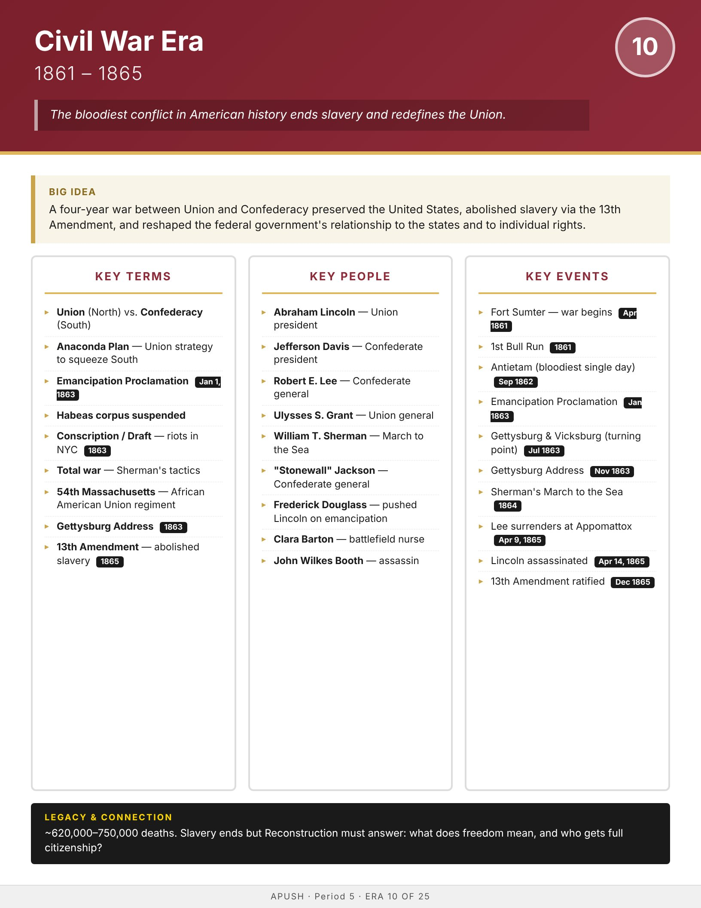

Era
Wise
AP History
AP United States History
Home
Course Sequence
Eras
Exam Prep
← Course Sequence
Era 10 of 25 · AP Period 5 · Lessons 23–24
Civil War
1861–1865
Open infographic full size
Print

← ERA 9
Sectionalism & Antebellum Crisis
ALL ERAS
Eras index
ERA 11 →
Reconstruction